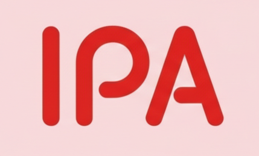
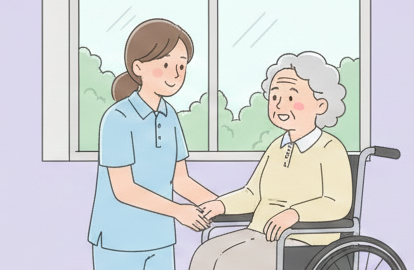
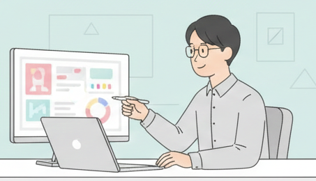
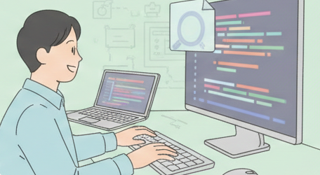

保有資格
このページでは、保有資格と資格を取るまでの状況を書いています。
このページでは、保有資格と資格を取るまでの状況を書いています。




私の保有資格と資格と取るまでに頑張った事を書いてます！
基本情報技術者試験は、3回目の受験で合格する事ができました。
１回目、勉強不足、２回目は時間配分をうまくできなかった事が不合格の原因だと思っています。
なので、３回目の受験際は、試験勉強に意欲的に取り組み、時間配分を考えながら、本番に臨みました。また、経過時間が
試験中に常に表示されていて、マインドコントロールが難しかったので、試験勉強の時も、後何分で解かなくていけないと自分にプレッシャーを
かけるために、タイマーの目の前に置き勉強していました。そして、３回目に合格する事が出来ました！
サービス介助士は、耳が聞こえない方、目が見にくい、見えない方のサポートをする事ができるという資格です。
この資格を取得してから、そういった方に、実際にサポートをしたことは今の所ありませんが、生活している中で見かけたら、
率先してサポートをしたいです！
html,cssの基礎的な知識をこの試験で身につけました。
この資格を取得後、コード模写を通じて、設計図を見てコーディングしていくことが少しですが、できるようになりました。
この資格を通じて、基本操作は理解できたと思います。
実際によく使われているショートカット等を、これから理解が深められるように頑張りたいと思っております。